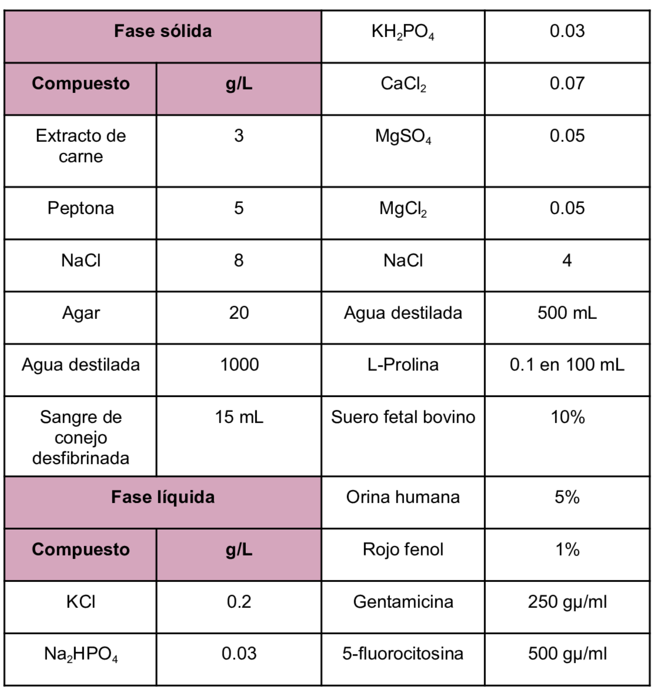

Se trata de un medio bifásico que es utilizado para el aislamiento y mantenimiento de parásitos hemoflagelados tales como Leishmania.
Composición
Se trata de un medio bifásico que es utilizado para el aislamiento y mantenimiento de parásitos hemoflagelados tales como Leishmania.
Composición

pH a 25°C 7.18±0.2
Se realiza la combinación de 4 mL del medio de fase sólida con 1.5 mL del medio de fase líquida.
Castelli, G. & Et.Al. (2023) Cultivation of Protozoa Parasites In Vitro: Growth Potential in Conventional Culture Media versus RPMI-PY Medium.https://www.mdpi.com/2306-7381/10/4/252